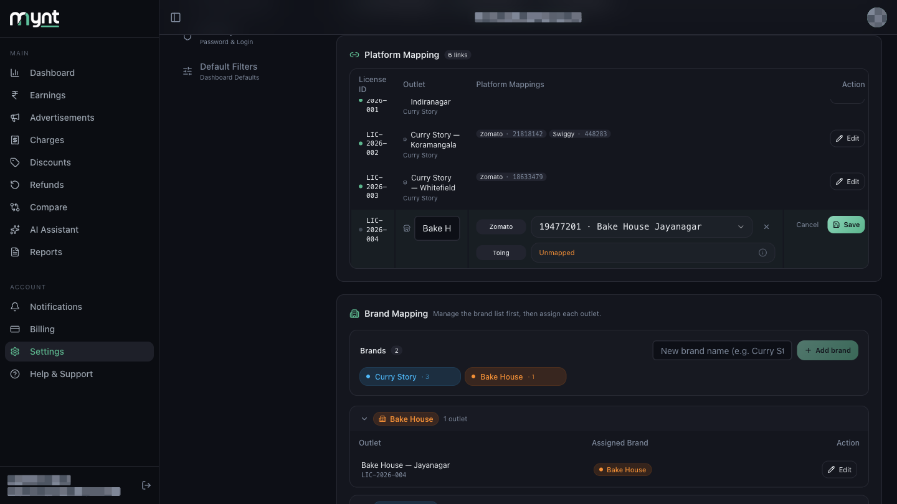
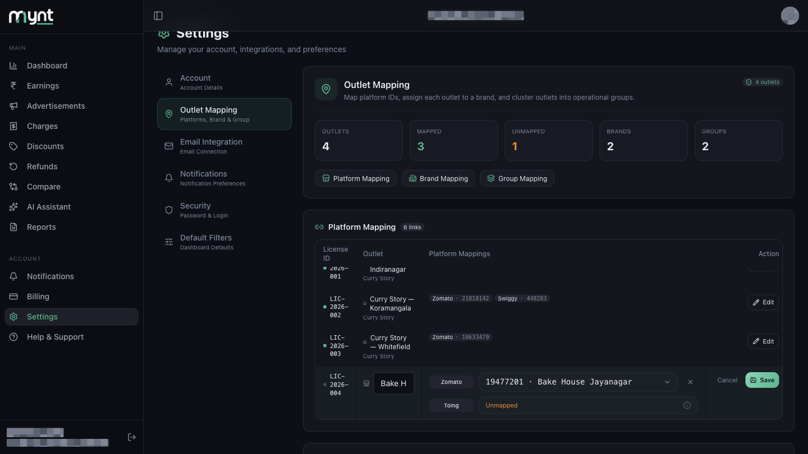
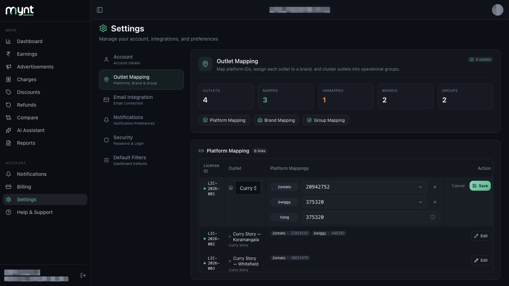
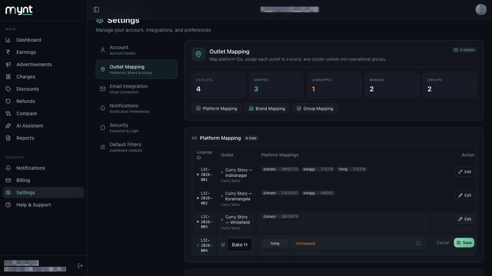
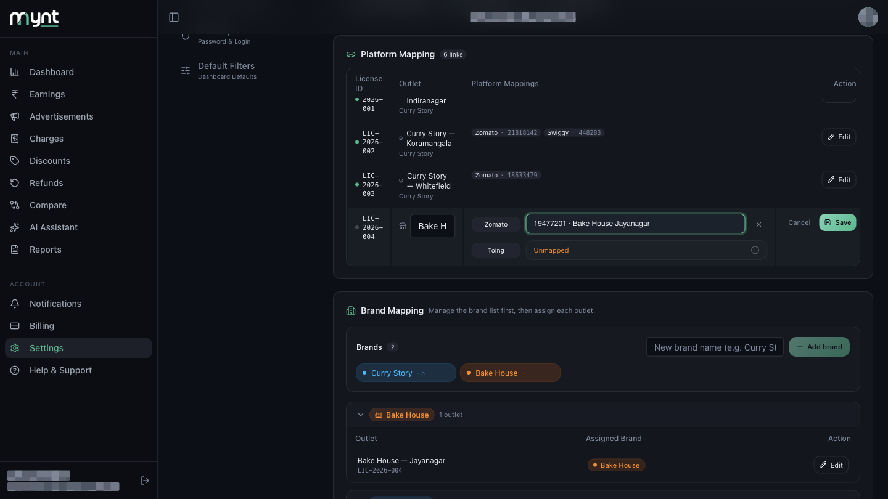
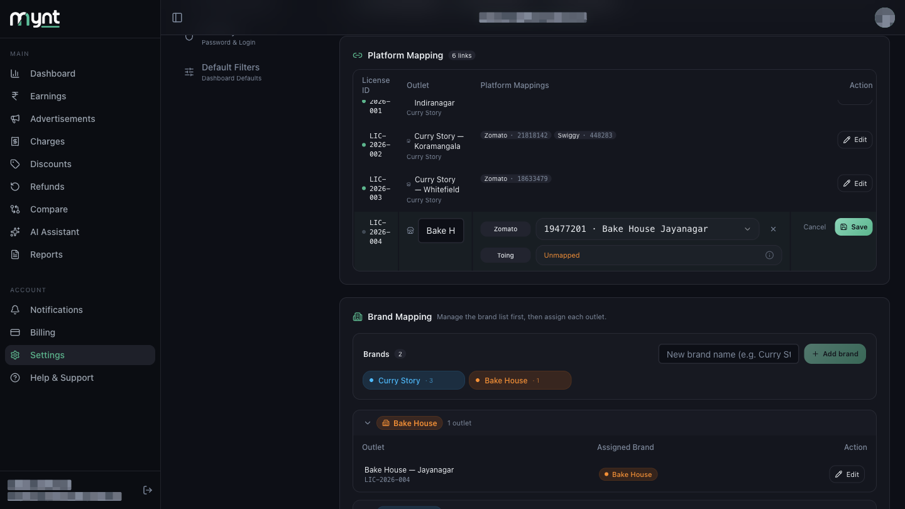

Linking a Zomato ID to an outlet in Platform Mapping
Left menu → Settings → Outlet Mapping.

Tap Platform Mapping in the row of buttons, or scroll down to the Platform Mapping card. Outlets with nothing linked show Not mapped in orange.

Find the outlet's row and tap Edit. The row highlights and its fields become editable, with Cancel and Save on the right.

Tap + Zomato or + Swiggy to add a platform link. Only platforms you have not already linked appear here.

Tap the dropdown next to the platform name and choose the right ID. Where Mynt found a restaurant name in your payout email, the option reads ID · restaurant name to help you tell them apart.

If the dropdown is empty, Mynt has not detected any unused IDs for that platform yet. Check that your payout email is connected and give it time to sync.
Tap Save. The link is stored and Mynt starts counting that platform's payouts against this outlet. Repeat for each outlet, and for each platform separately.

| + Zomato / + Swiggy missing | You have already linked that platform for this outlet, or Mynt has not detected any ID for it |
|---|---|
| Dropdown is empty | No unused IDs detected yet — check Email Integration shows Connected |
| "That platform ID is already registered" | The ID belongs to another outlet. See Fixing incorrect, duplicate or unmapped outlets |
| Toing cannot be edited | Correct — it follows your Swiggy ID automatically |
Or open Help & Support in Mynt and raise a ticket.